Montanha Machu Picchu ou Huayna Picchu? E minha subida na primeira
Subir a Montanha Machu Picchu, apesar de bastante exaustivo, foi uma das experiências mais gratificantes da minha vida. Mas vamos começar do começo. Tenho certeza que muitos que lerão esse texto devem estar se perguntando algo como “Como assim subir a Montanha Machu Picchu? Machu Picchu não é … Machu Picchu? Ruínas de uma cidadezinha Inca super turística em um lugar fantástico. Precisa escalar uma montanha para chegar lá?”.
Está com pressa? Vamos direto ao ponto!
Gravei um vídeo para te ajudar a decidir qual montanha subir (se é que vai querer subir alguma depois do vídeo) e como se planejar para ter a sua melhor passagem possível por Machu Picchu \o/. Ah, tem o pdf com o mapa de Machu Picchu também. Você vai entender melhor durante o vídeo. É só clicar aqui.
Ou então prossiga com a leitura normal do artigo ;)
O que você vai aprender nesse artigo:
- O básico sobre a cidadela de Machu Picchu e suas montanhas;
- Montanha Machu Picchu ou Huayna Picchu? Qual escolher;
- O que o guia comentou sobre as montanhas?;
- Ingresso Machu Picchu, qual e como comprar;
- O que levar?;
- Minha aventura subindo a Montanha Machu Picchu;
- Quanto tempo demora para subir a montanha? E para descer?;
- O que tem no topo da montanha?;
- O que o guardinha que fica no topo da montanha me contou sobre o tempo de subida dele?;
- E, claro, muitas fotos!
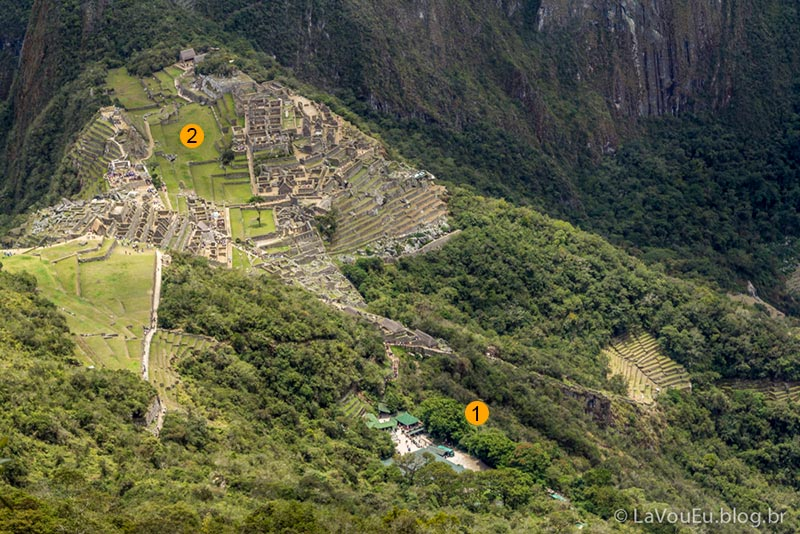
O básico sobre a cidadela de Machu Picchu e suas montanhas
Machu Picchu foi uma cidade construída e habitada pelos incas ao redor do ano 1450. Hoje, ela é o que restou dessa cidade, então são ruínas da cidade perdida dos incas, como também é apelidada. Sendo ainda mais específico, a cidadela e seus arredores constituem de certa forma um parque, com portaria, catracas, conferência de ingressos e com todo um sistema de transporte para chegar lá. Sim, você não precisa subir montanhas para chegar lá! Tipicamente, você pode ir de trem partindo de Cusco e depois de ônibus de Aguas Calientes até a porta do parque. Mas se quiser, também é possível chegar lá pela famosa Trilha Inca ou então Salkantay, depende do grau de aventura que você quer para sua viagem.
A cidadela é cercada por duas montanhas. A montanha de mesmo nome que a cidadela, portanto, Montanha Machu Picchu e a Huayna Picchu. A primeira, significa “velha montanha” e a segunda “jovem montanha”. Você pode subir até o topo das duas e suas entradas ficam dentro do próprio parque. No mapa abaixo você consegue ter uma ideia melhor da localização da cidade inca e suas montanhas.
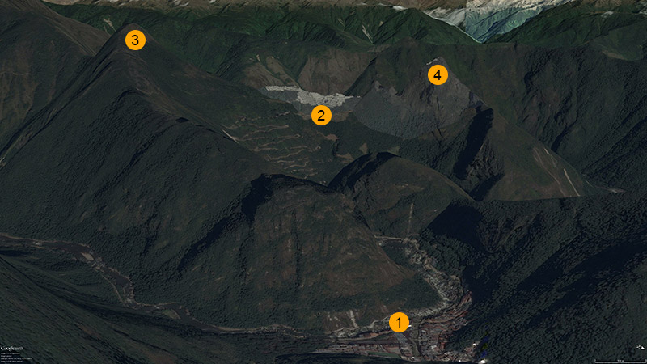
Ao longo do texto, as imagens também vão te ajudar a entender melhor a região. Vamos agora conhecer cada uma das montanhas para poder decidir qual subir.
Montanha Machu Picchu ou Huayna Picchu? Qual escolher
Pois bem, agora você já está ambientado com Machu Picchu, já sabe o básico e tem ideia de onde fica e como chegar. Ótimo. Agora vamos elevar nossa experiência na cidadela ao seu máximo, vamos conhecer as montanhas que existem por lá.
Algumas pessoas me perguntam: “mas eu terei uma experiência frustrada se não subir alguma das montanhas?” e eu te digo: claro que não! Você provavelmente terá um passeio muito bacana conhecendo a cidadela e dependendo do quanto você quiser conhecer e gastar tempo nos principais pontos dela, você nem terá tempo para subir uma das montanhas em um dia só. Então veja o que funciona melhor para você. Mas se você tiver a oportunidade de subir, como no meu caso, isso fez toda a diferença e foi o momento épico da viagem toda (passei 1 mês no Peru). Então se você está afim de tornar Machu Picchu um momento inesquecível na sua vida, recomendo fortemente a subida! (ao menos a da Montanha Machu Picchu, que foi a que eu subi)
As montanhas
A imagem clássica de Machu Picchu é extremamente conhecida e você pode observar mais uma vez na imagem abaixo. Nela, já podemos ver uma das montanhas, essa é a Huayna Picchu (ou Wayna Picchu) como indicado na foto.
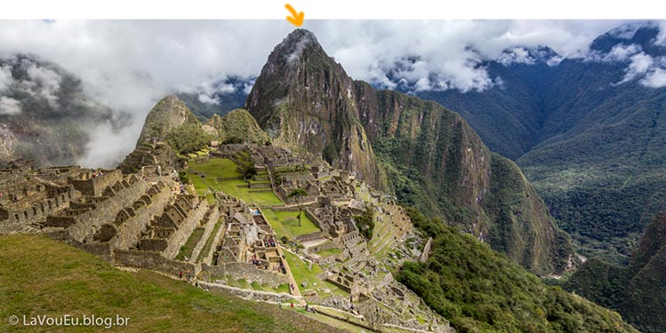
A outra montanha fica exatamente na vista contrária, então vamos usar a vista do topo de Huayna Picchu para observar a Montanha Machu Picchu. Na imagem abaixo, você pode apreciar a vista que terá ao subir Huayna Picchu, que é uma vista reversa à imagem que estamos acostumados a ver a cidade inca. Nessa imagem é possível ter ideia da imensidão e beleza desse lugar, além de você poder conferir o topo da Montanha Machu Picchu que está indicado da imagem.
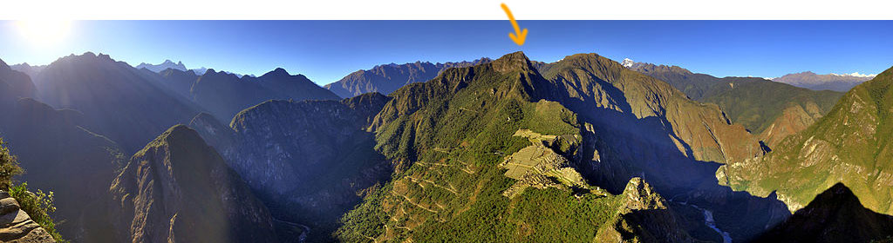
Eu subi a outra montanha, então não pude apreciar essa vista. Mas em compensação pude ver a cidadela em sua vista padrão ficar cada vez menor conforme subia a montanha. Também da para perceber facilmente que vamos ganhando altura, inclusive ultrapassando o topo de Huayna Picchu.
 Vista de praticamente na mesma altitude da cidadela; (2) e (3) Vistas do meio do percurso da subida da Montanha Machu Picchu; (4) Vista do topo da Montanha. Repare na mudança do ponto de vista, em (1) observamos o topo de Huayna de baixo para cima, na figura (2) vemos praticamente da mesma altura e em (4) vemos de cima para baixo.")

Outras imagens do texto também vão te ajudar a entender essa dimensão
O que o guia comentou e algumas informações a mais
Durante o passeio guiado pela cidadela, o nosso guia comentou sobre as montanhas, principalmente quando passamos em frente ao caminho para a entrada de Huayna Picchu. O guia comentou que essa era a montanha mais procurada, por ter uma subida menos cansativa (menos demorada) que a outra, nessa hora ele deu um sorrisinho maroto, e aí pensei, “xi, tô lascado” hehehe. Ele comentou também que na Montanha Machu Picchu as pessoas em geral demoram só para subir em torno de 1h30 a 2h, e eu te confirmo essa informação, mas acrescento que algumas pessoas podem levar uma meia hora a mais do que isso (quanto eu demorei? continue a leitura…). Tentando animar um pouco as prováveis caras tristes que ele deve ter visto, completou dizendo que a Montanha era o único lugar do parque que se pode ter uma visão 360° graus da região. Não sei ao certo por que não seria possível ter uma vista 360° no topo de Huayna Picchu, se você souber, deixa um comentário!
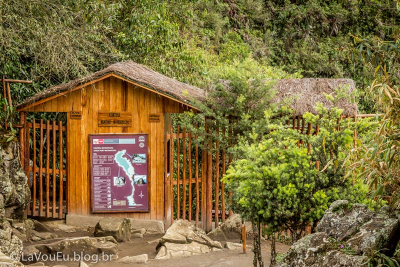
Ele também nos contou duas histórias de acidentes em Huayna Picchu. A primeira foi uma pessoa que caiu da montanha. Felizmente ela teve sorte e caiu em cima de árvores que amorteceram a queda e a pessoa sobreviveu depois de ser resgatada. Já na outra história, um senhor de mais idade conseguiu chegar até o topo, mas durante a descida, já perto do fim, ele desequilibrou e quase caiu abismo abaixo, claro que isso gera uma tensão e um pico no batimento cardíaco, foi o suficiente para o senhor enfartar e falecer. Enfim, histórias…
Menos assustador, mas mais frequente, segundo o guia, são as pessoas que travam no meio da subida e precisam ser retiradas pelo pessoal do parque lá de cima. “Como assim travam, Filipe?” Subir uma montanha de cara ou de costas para o abismo não é algo seguro, segurança não é o forte da subida de Huayna Picchu. Muito menos agradável se você tem problemas com altitude, eu por exemplo não fico confortável na beira de varandas de prédios ou qualquer outra coisa alta. Então as pessoas simplesmente travam, não vão nem vem, não conseguem nem subir e nem voltar. Se você também não se sente confortável nessas condições, a escolha da montanha adequada para você ficou fácil, vai ser como eu, Montanha Machu Picchu!
Outras informações ainda são válidas. O pico de Huayna Picchu fica a 2720 metros acima do nível do mar, o que dá uma subida de aproximadamente 270 metros partindo da cidadela (considerando a altitude da praça central, 2453m). Já o pico da Montanha Machu Picchu fica a 3061 metros acima do nível do mar, uma subida de 608 metros, considerando novamente a altitude da praça central da cidade inca. Se você decidir subir Huayna Picchu, você também vai poder apreciar ruínas incas antes da subida, o Templo da Lua, e também próximo ao topo da montanha. O Templo da Lua e outras cavernas naturais próximas, ficam na face norte da montanha e são inferiores, em altitude, ao ponto de partida da trilha.
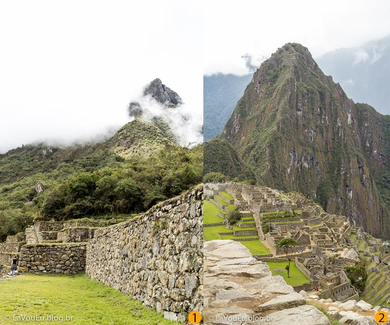
Tabela resumo sobre as montanhas
Vamos a uma tabela para resumir as características das montanhas e facilitar sua decisão:
| Critério | Huayna Picchu | Montanha Machu Picchu |
|---|---|---|
| Altitude do topo | 2720m | 3061m |
| Tempo de subida + descida | 2h00*1 | de 2h10 a 4h002 |
| Perigo | Mais perigosa3 | Menos perigosa4 |
| Você sente desconforto em altitude? | Não recomendada | Da para subir sem grandes problemas |
| Concorrência para comprar ingresso | Alta | Baixa |
| Vista | Reversa à vista padrão de Machu Picchu | Vista padrão de Machu Picchu e no topo a visão de 360° da região |
| Subida íngreme? | Subida íngreme praticamente o tempo todo | Íngreme mais para o fim do trajeto |
| Possui ruínas | Sim | Não |
| Cansaço | Exige menos fisicamente 5 | Exige mais fisicamente |
1 Um outro casal carioca que conheci no passeio guiado pela cidadela subiu Huayna Picchu, eles demoraram por volta de 2h00 para subir e descer, faltando ainda adicionar o tempo que ficaram no topo. Esse é o tempo deles, não sei como isso se compara a outras pessoas.
2 Obviamente o tempo vai variar. Estou considerando os tempos que vi e conversei com turistas por lá. As pessoas que subiram rápido levaram 1h30 para subir e 40min para descer. As meis lentas, 2h30 para subir e 1h30 para descer. Lembre-se que ainda falta adicionar o tempo que você vai ficar no topo aproveitando a vista.
3 Você se encontrará com frequência em situações de cara/costas para o abismo sem muitos itens de segurança ou proteção. Um escorregão ou desequilibro por ser fatal.
4 Eu não disse segura, eu escrevi menos perigosa. Na maior parte do tempo o caminho é largo, você nem enxerga o abismo ou algo assim, é tranquilo. Mas em alguns momentos o caminho estreita e fica um pouco mais perigoso sim. Como eu comentei, eu não me sinto bem em altitude, mas em nenhum momento da subida eu senti isso. Lá no topo, perto das bordas, aí sim eu senti desconforto, mas o cume é grande o suficiente para você ficar lá sem desconforto nenhum, é só não chegar perto da beirada.
5 Eu disse que exige menos fisicamente, pois a subida é mais curta. Isso está longe de dizer que não é cansativo, ok?
Ingresso Machu Picchu, qual e como comprar
Lembra que o guia comentou que Huayna Picchu era mais procurada? Pois bem, os ingressos para ela se esgotam com bastante antecedência. Mas como assim esgota? Não é só entrar lá? Não! Nem lá, nem em Machu Picchu e nem na Montanha Machu Picchu. Inclusive as duas montanhas tem uma portaria dentro do próprio parque que fica fechada fora dos horários permitidos e ao chegar lá você vai ter que se identificar antes de subir.
Existe um limite diário do número de visitantes que podem entrar no parque (2500) e também em cada uma das montanhas. Para Huayna, o limite é de 400 pessoas, divididas em dois grupos de 200, cada um com seu horário de partida distinto. Já para a Montanha, o limite é de 800, dois blocos de 400 com horários distintos. Não se esqueça de comprar seu ingresso com antecedência para garantir seu lugar lá.
Depois que você escolheu se vai subir alguma montanha e qual será, fica fácil escolher seu ingresso. Tirando o Machupicchu horário vespertino, você tem três grandes opções: Machupicchu (ingresso para entrada no parque, sem nenhuma montanha), Machupicchu + Huaynapicchu e Machupicchu + Montaña (Montanha Machu Picchu). Para os dois ingressos que incluem montanhas, eles estão divididos em dois, pois existem dois horários de subida que eu comentei. No próprio nome do ingresso está escrito o horário de chegada na portaria da montanha para poder subir. Escolha o horário que se adeque melhor ao seu planejamento.
![Esse é o ingresso que você deve levar impresso no dia. Repare que ele tem três carimbos de entrada. Fique esperto, pois existe um limite de vezes que você pode entrar e sair do parque que é 3. Então, quando você entrar pela primeira vez, já vai ter contado uma, você só terá mais duas entradas, planeje suas saídas para ir ao banheiro e se alimentar. Tenha seu passaporte a mão nessas horas, você terá que mostrá-lo toda vez. Você pode ver no ingresso também o horário que eu escolhi para o início da subida (das 9 até 10h) e o preço do ingresso com a Montanha (147,72 Soles)](img/post-assets/mmp/ingresso-machu-picchu-lavoueu.jpg "Esse é o ingresso que você deve levar impresso no dia. Repare que ele tem três carimbos de entrada. Fique esperto, pois existe um limite de vezes que você pode entrar e sair do parque que é 3. Então, quando você entrar pela primeira vez, já vai ter contado uma, você só terá mais duas entradas, planeje suas saídas para ir ao banheiro e se alimentar. Tenha seu passaporte a mão nessas horas, você terá que mostrá-lo toda vez. Você pode ver no ingresso também o horário que eu escolhi para o início da subida (das 9 até 10h) e o preço do ingresso com a Montanha (147,72 Soles)")
Para comprar o ingresso você deve ir no site oficial e realizar a compra lá. A princípio, é tranquilo, portanto você não precisa de intermediários para a compra do ingresso.
Entretanto, o sistema do site peruano não aceita qualquer cartão, eles aceitam apenas Visa (e ainda cartões que tenham o tal Verified by Visa). O meu cartão de crédito era MasterCard, o que fiz para conseguir realizar a compra? Além do meu cartão de crédito, eu ia levar um cartão pré pago para a viagem, então escolhi um com bandeira Visa e funcionou sem problemas. Se você não puder fazer isso, pode tentar usar o cartão de algum amigo ou familiar. Em último caso, você vai ter que se submeter a algum intermediador que vai cobrar alguma taxa para o serviço, mas ao menos você chega lá com sua reserva. Chegar em Machu Picchu sem ingresso é furada, verifique essas picuinhas com antecedência.
O que levar?
Como toda região de montanha, o padrão é ser um pouco mais fresquinho que as cidades mais baixas, mas quando sai o sol esquenta e quando ele vai embora esfria rapidamente. O melhor, ao invés de ficar preso às médias de temperatura (de 9°C a 29°C) é observar a previsão do tempo para o dia que você estiver por lá e saber que: quando sair o sol vai esquentar e quando ele se for esfriará. Esteja pronto para as duas situações e, como provavelmente você ainda vai subir uma das montanhas, tenha certeza que o esforço físico te dará calor :). Então, esteja pronto para todas essas situações.
- Passaporte para entrada no parque e nas montanhas;
- Ingresso impresso (servirá tanto para entrar no parque quanto na montanha);
- Vista roupas adequadas à previsão de temperatura do dia, confortáveis e apropriadas para caminhar bastante por lá, além de subir a montanha desejada (você já vai fazer esforço suficiente, não queria sua roupa ou calçado te atrapalhando!);
- Água 6;
- Repelente;
- Protetor solar;
- Pequenos lanches;
- Capa de chuva ou roupa impermeável (o tempo lá é conhecido por mudar rapidamente);
- Mochila pequena 7.
6 Eu levei quase 2 litros, foi pouco. Eu suei horrores subindo a montanha e não era um dia de sol forte, estava mais para encoberto. Água lá é extremamente cara, idealmente traga água de Cusco (se tiver espaço na bagagem) ou então ao menos compre água em Aguas Calientes. O preço da garrafinha de 600ml em Machu Picchu é o mesmo da garrafa de 2,5L em Aguas Calientes, 8 Soles. Você deve conhecer o quanto de água você toma geralmente, deve levar em conta o esforço físico que fará e se esteve perdendo água recentemente (dica de quem esteve com infecção intestinal :P ) e também não exagerar no peso de tudo na mochila nas costas. Faça um balanço de tudo isso e decida quanto de água levar.
7 Leve o mínimo de coisas com você, o peso fará diferença na subida e também não é permitido entrar com mochilas grandes no parque.
Minha aventura subindo a Montanha Machu Picchu
Um dos dias mais incríveis que eu já vivi.
Pré subida
Eu decidi comprar o ingresso com a Montanha meio que por acaso. Eu não consegui achar informações suficientes na internet para decidir se ia ou não subir a Montanha (até por isso escrevo esse artigo), mas como a diferença do preço do ingresso era pequena, acabei comprando, mas foi bem aquilo “ah, sei lá, vai com Montanha mesmo, na hora decido se subo ou não”.
A subida para mim foi um pouco mais difícil do que o normal. Eu fiquei com uma infecção intestinal praticamente a viagem toda, no dia da subida eu estava no Peru há praticamente 3 semanas e isso vai te debilitando. Claro que não é algo agradável, mas também não estava me impedindo de conhecer os lugares planejados, apesar da constante busca por banheiros hehe. Mas no dia da Montanha eu estava me sentindo um pouco melhor. Além disso, eu também estava com minha máquina fotográfica que junto com a lente pesa uns 2kg. Quem mandou gostar de fotografia, hein? hahaha. Mas da para ser bem pior que isso, esse kit fotográfico ainda da para dizer que é leve. Aí você junta isso com mais 2kg de água, capa de chuva, protetor, repelente, isso e aquilo e sua mochila vai pesando… Lembre-se de tentar ir o mais leve possível, se estiver em dupla ou grupo, distribua o peso entre todos.
Logo que chegamos na cidadela, bem cedo pela manhã, a primeira coisa foi o passeio com o guia para conhecer os principais pontos da cidade inca, durou umas 2 horas. Durante o percurso, eu estava bem em dúvida se subia ou não, pois eu estava perdendo o fôlego com muita facilidade. Parecia pior que nas ilhas do Titicaca que ficam em uma altitude bem maior (~4000m).
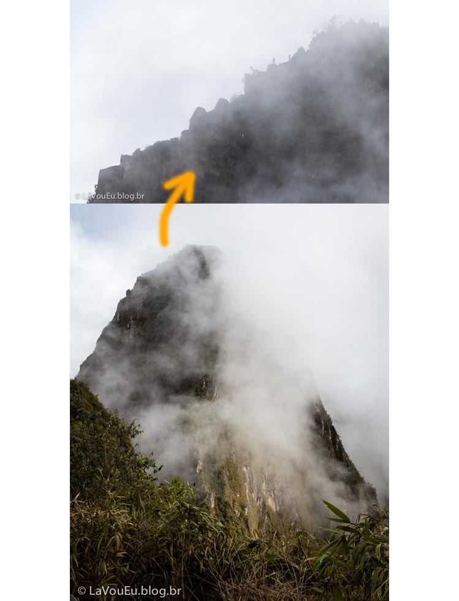
Na minha cabeça, eu estava assim: “Bom, estou aqui, não sei se volto outra vez na vida aqui, tenho que aproveitar. Vamos ver no que vai dar… Eu até já paguei esse ingresso um pouco mais caro… Tenho que tentar, nem que seja subir um teco para ver como é e se cansar de mais é só voltar, sem crise.” E além disso, eu também precisava ver se me sinto bem durante a subida, já que estava fragilizado da infecção.
Antes de realmente começar a subida, eu fiz um “pit stop” para tirar o casaco (esquentou), passar repelente, protetor solar, ir ao banheiro e comer algo antes de subir (precisa sair do parque para esses dois últimos).
Lá vou eu subir a Montanha
Entrando novamente no parque, segui as placas e cheguei na tal portaria da Montanha. Lá você vai ter que mostrar seu ingresso, passaporte e colocar seu nome na lista com o horário de partida (quando você voltar, completará com o horário de saída).
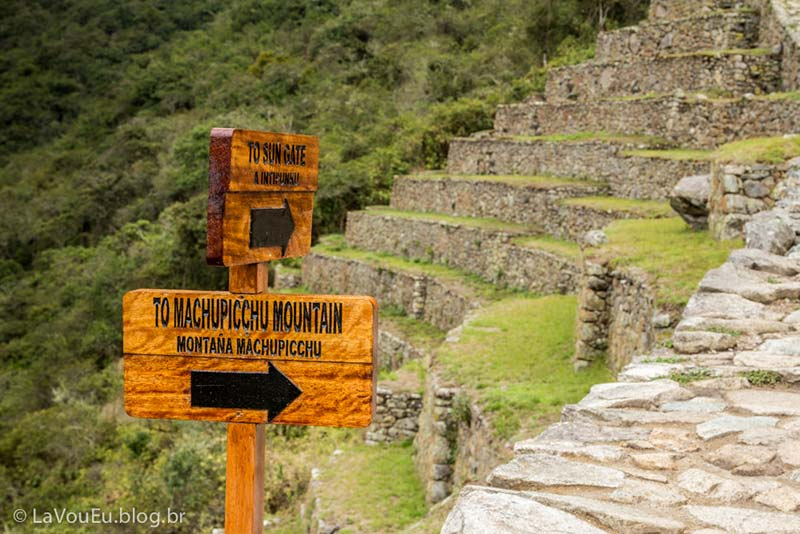
E aí a subida começa! Que visão você vai ter? Degraus!!! Infindáveis degraus durante todo o percurso. Tem que ser forte, mas devagar se chega ao topo.
Foi muito interessante a subida analisando um ponto de vista que eu não esperava, as pessoas que estava por lá subindo. Claro, tinham os mais reservados, mas tinha muita gente bacana, feliz, motivada e te incentivando a conseguir chegar lá em cima também. Durante o percurso, eu encontrei com 12 outros brasileiros subindo a Montanha. Era bizarro, as vezes parecia que estava no Brasil subindo qualquer montanha em algum lugar que ainda restou um pouco de mata atlântica, dada a presença de tantos brasileiros e a vegetação ao redor. A vegetação dessa região contrasta muito com a das cidades que estive no Peru antes de lá, Lima e Arequipa. Nesses lugares é “tipo deserto”, bem seco, sem muita vegetação de maior porte.
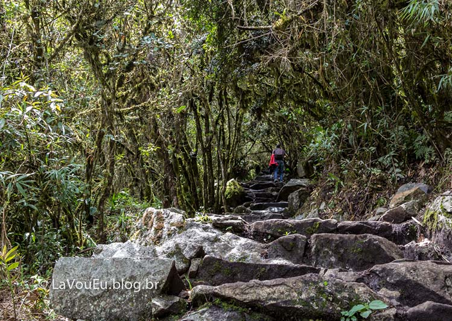
Dois desses brasileiros (um moço e uma moça), tinham feito a trilha de Salkantay e disseram que lá eles sofreram, mas a Montanha eles pareceram tirar de letra, claro que cansaram, mas chegaram lá em cima sem dificuldades e bem mais rápido do que eu. Em compensação, tinha uma outra brasileira que sofreu bastante para chegar lá em cima, ela demorou mais do que eu, umas 2h30 para chegar no topo, e quando chegou lá estava destruída, chorando, ela deu uma exagerada. Mas ela estava com uma amiga, que já estava lá em cima e que cuidou dela. No fim deu tudo certo.
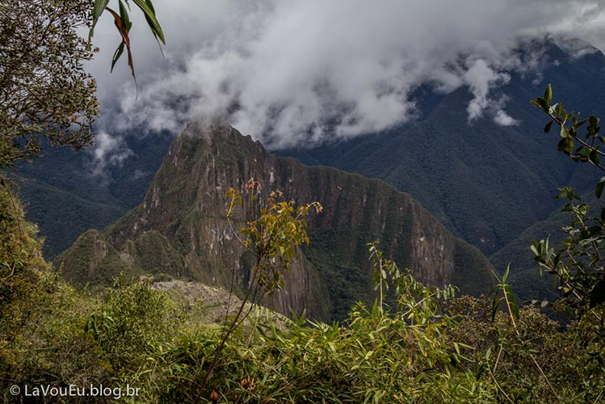
Mas os gringos também davam aquela força, principalmente quando estava chegando mais perto do topo, claro que eu estava com aquela cara de cansado e vendo isso o pessoal sempre incentivava dizendo que faltava pouco, que tava chegando, “falta só mais 15 minutos”, aí um pouco depois, “falta só 10 minutos”, mais um pouco e “falta 5 minutos, ta quase!”.
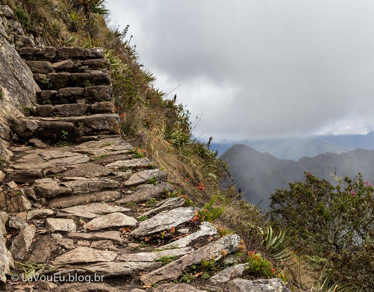
Principalmente depois do meio da subida (com a cabeça de quem já chegou lá em cima e agora sabe mais ou menos onde era o meio), quando a gente começa a pensar, onde será que eu estou? Falta muito? Como será que fica o caminho mais para cima? Tinha um pessoal já voltando, dizendo “o caminho vai ficando cada vez mais íngreme, mas da para subir”. Isso não era lá muito animador, mas eu me sentia bem, já tinha subido bastante tempo, tinha que estar chegando, não ia parar ali… Mas agora você já sabe, quando o caminho vai ficando íngreme significa que você está se aproximando do cume.
Não existem muitos “check points”/mirantes/lugar com algum espaço plano para você dar uma pausa durante a subida, que me lembro uns quatro. Mas também é possível ver a vista da cidadela e das montanhas ao redor durante boa parte do percurso, então vista legal você terá com frequência. Quando cansar, é só parar nos degraus mesmo, na maior parte do percurso, são largos o suficiente para passar mais de uma pessoa.
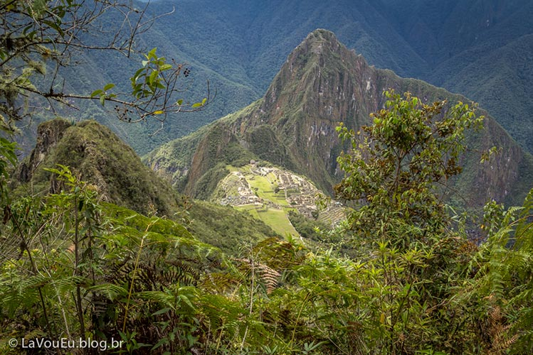
No dia que eu estava lá, o guia comentou que os mosquitos atacam quando o sol sai de verdade, não quando fica nublado ou com neblina que foi o caso. Eu passei o repelente por precaução, mas não reparei nenhum mosquito por perto durante todo o dia. Foi bem tranquilo.
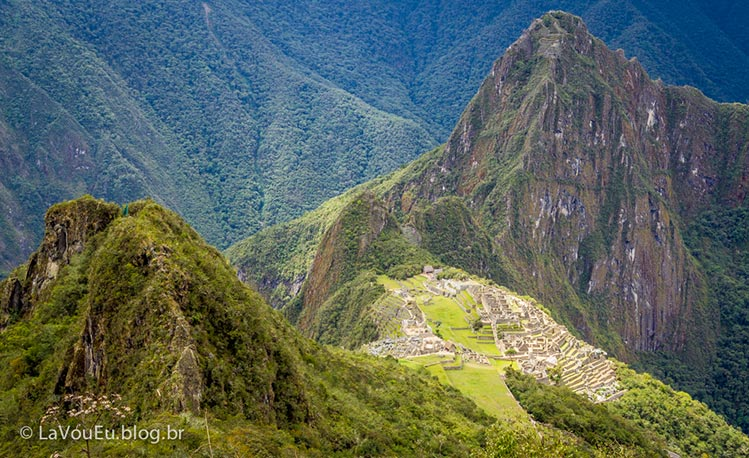
Agora, apesar de não estar um calor forte e só de vez em quando o sol dar as caras, meu amigo, esquenta subir a Montanha, o esforço é grande ou gigante (dependendo do seu preparo), e eu suei muuuuito. Se eu dava paradas para recuperar o fôlego, tomar água ou comer alguma coisa? Mas é claro! Incontáveis paradas hahaha, e algumas delas para aproveitar a vista :)
Acha que acabou? Mais alguns degraus para você…
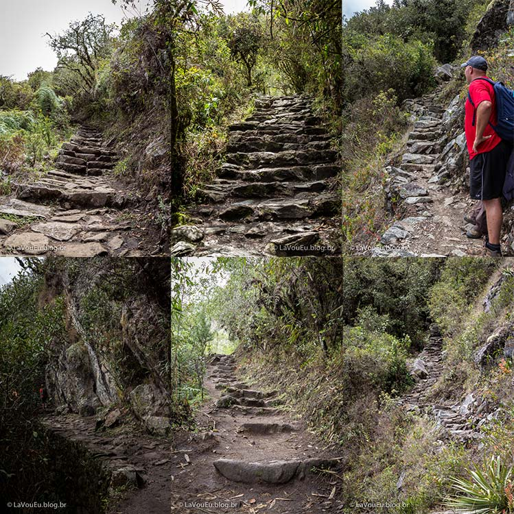
Ah, mas agora chegou, né Filipe? Hum, não… Mais alguns degraus :P, mas esses são os últimos!
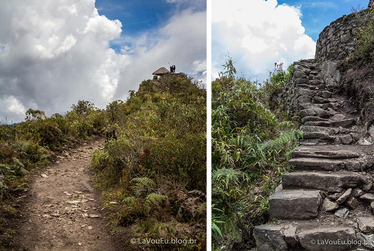
Mas uma hora chega! Ou melhor, depois de 2:10 de subida, cheguei. É maravilhoso chegar. Lá em cima encontrei com o pessoal brasileiro que tinha me ultrapassado na subida e tiramos umas fotinhos um para os outros. Todo mundo feliz curtindo a vista e o momento. Depois das fotos, aproveitei para comer um pouco e perguntar uma coisa para o guardinha do parque que fica lá em cima: Quanto tempo você demora para subir? Primeiro ele me disse que varia muito, mas depois acabou falando uns tempos. Ele comentou “uns 40minutos, mas as vezes pode chegar a uma hora e meia, depende…” Acabou não me explicando exatamente do que depende tanto, mas deve ser das condições do tempo, se estiver muito quente, se estiver molhado e escorregadio, isso tudo deve atrasar a subida. Mas sentiu o drama né? O cara que faz isso todo dia, está acostumando com o percurso e com a altitude demora facilmente 40 minutos.
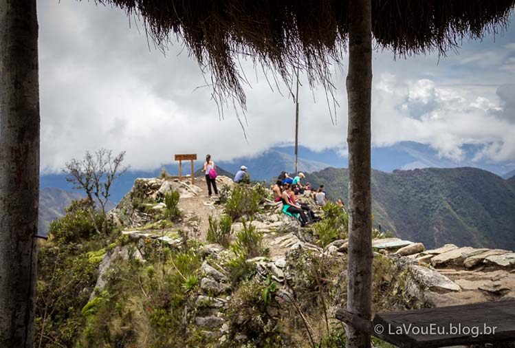
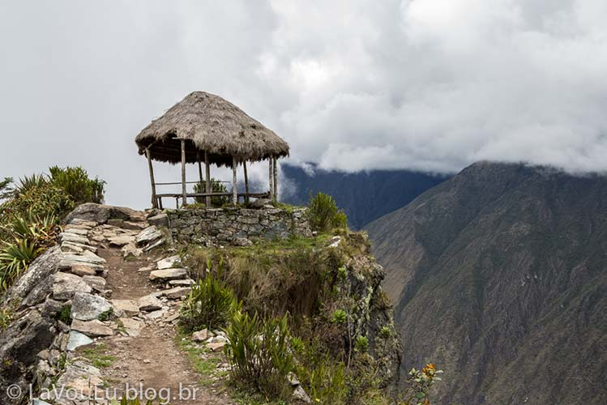
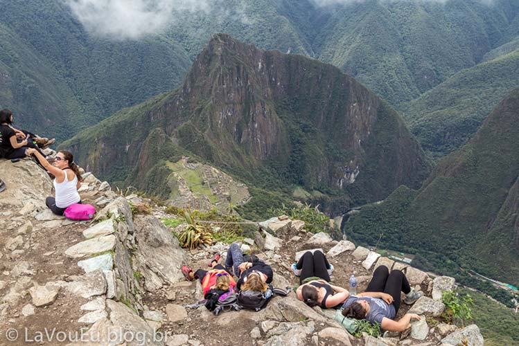
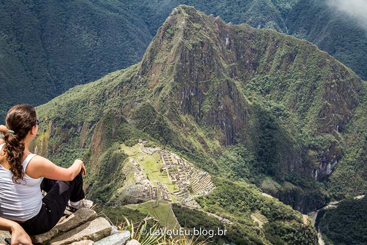
A descida
Depois de apenas 20 minutos lá em cima o mesmo guardinha mandou todo mundo descer. Puxa, mas já? Pois é, já estava chegando perto (não tão perto, ele se excedeu um pouco) da hora em que fecha a parte da Montanha, então todo mundo tinha que descer. Fica um conselho importante, se planeje para subir no início do seu horário de subida para que você possa aproveitar o maior tempo possível lá em cima. Meu horário de início de subida era das 9h até 10h, cheguei por lá umas entre 9:20 e 9:30, se eu tivesse chegado à 9h, teria desfrutado de mais tempo lá em cima. Mas tudo bem, valeu do mesmo jeito.
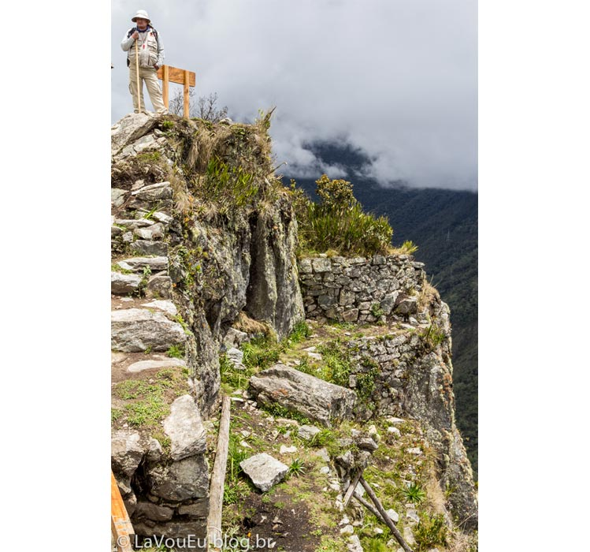
Se você subir no primeiro horário, você terá bastante tempo de qualquer forma, pois o encerramento é depois dos dois ciclos. Mas tenha em mente que vai ter gente subindo quando você provavelmente estiver descendo e nas regiões estreitas do percurso, isso pode não ser agradável, principalmente se você não se sente bem em altitude. Eu abri passagem várias vezes para o pessoal que descia, eu achava melhor simplesmente parar e esperar eles passarem com calma. Não só eu achava melhor, pois algumas pessoas até me agradeceram por isso. Eu estava do lado da montanha, então me encostava nela e era tranquilo, agora quem desce ia do outro lado, que não tem nada. Então considero um atitude bem legal facilitar para quem está descendo.
Treine antes de ir, melhore seu preparo físico. Eu não sou sedentário, mas também não aguento muito tempo de corrida (estava com 29 anos). E claro que a infecção não ajudou em nada né, eu estava debilitado. Mas a subida é extremamente desgastante e se você estiver com o preparo físico em dia, vai chegar lá em cima mais rápido, aproveitar mais o topo e sofrer menos :)
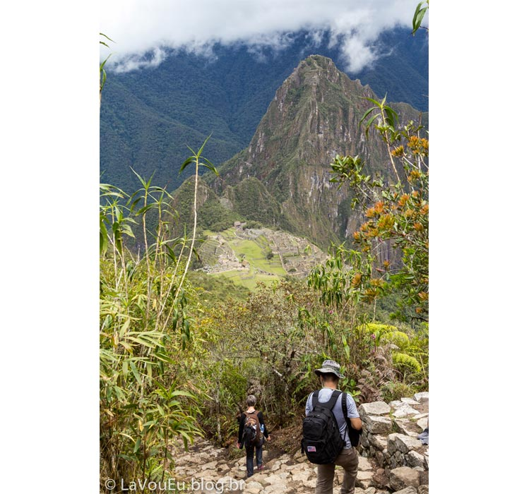
Para baixo todo santo ajuda? Sim contanto que suas pernas suportarem o esforço. Eu nunca tinha sentido isso, mas uma delas começou a falhar, a travar, doía e ficava travada, credo, que coisa mais doida. Eu simplesmente não estava mais conseguindo andar direito e para descer precisa ter muito cuidado para não tropeçar e rolar escadarias abaixo. Mas com a perna travando daquele jeito, eu fiquei realmente assustado, eu pensava: “como que vou conseguir descer a Montanha toda nesse estado?”.
O que eu fiz? Bom, no primeiro espaço que deu, eu dei uma pausa (mal comecei a descer e tive que parar hahaha) e dei uma boa alongada nas pernas, pareceu que deu uma aliviada então voltei a descer. No início ainda incomodou um pouco, mas já tinha melhorado. Depois de um tempinho descendo ficou bom. Durante o trajeto, teve uma hora que a outra perna começou a dar o ar da graça, mas foi pouco e voltou ao normal depois. Isso acabou gerando um pouco de tensão e acho que não aproveitei tanto a descida quanto a subida.
Um outro casal que estava por lá teve problemas na descida também, a descida força bastante os joelhos né, então para eles estava doendo e tiveram que ir bem lentamente.
Minha descida levou 1h10 e depois do susto inicial foi tudo bem, na hora de descer o fôlego não pegou, foram bem poucas as pausas, mais para apreciar a vista e tirar umas fotos.
Considerações finais
Esgotado. Mas extremamente feliz por ter conseguido, por ter aproveitado aquele momento tão intensamente e vivido essa experiência. Valeu muito. Sinceramente eu não sei explicar exatamente o motivo disso. Por que raios alguém vai querer se desgastar loucamente para subir uma montanha? Não sei, mas sei que já vi algo parecido na TV outro dia sobre um pessoal que faz ultramaratona, eles tem um tipo de comportamento bem parecido. Eu estou muito longe de um ultramaratonista, mas para mim essa subida deve ter sido algo parecido com o que um cara super treinado precisa de esforço físico para estar nesse mesmo momento psicológico. Se alguém entende melhor sobre isso, posta nos comentários que eu quero saber e outros com certeza também!
Esse passeio é para você? Claro que sim!!! No pior caso, é simples, suba só o quanto você achar que deve, que era minha proposta inicial. Enquanto se sentir bem, vá indo, vai ser bacana :) A vista é legal, você está no meio da natureza. O que importa é você respeitar seus limites, isso é muito importante. Você não só pode como deve tentar se superar, mas não de forma inconsequente, respeite seus limites. Só da para descobrir como é fazendo. Minhas expectativas eram baixas, mas fui surpreendido de um jeito e foi magnífico. Foi incrível, foi um momento mágico. Foi uma oportunidade única de esquecer da vida, superar um desafio e fazer uma coisa incrível, ao menos para mim.
A vida muitas vezes é uma subida de Montanha Machu Picchu… Força!
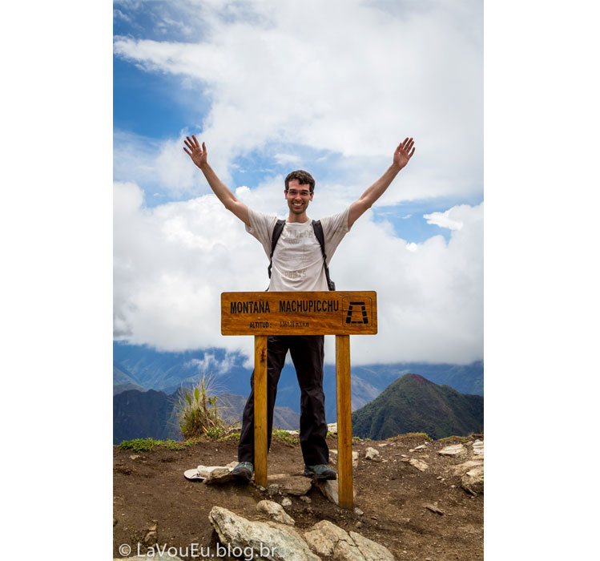
E aí, animado para conhecer a cidadela e subir uma montanha? Para você poder passar mais tempo no parque e aproveitar ele por completo, sugiro que você chegue em Aguas Calientes (Machu Picchu) no dia anterior, durma por lá e acorde cedo para chegar no parque próximo do horário de abertura e então passar o dia todo lá. Para facilitar a sua vida e dar a oportunidade de você retribuir a ajuda que estou te dando com todas essas dicas e informações, coloco abaixo o principal site que uso para procurar por hospedagens quando viajo. Escolha sua data e clique em Pesquisar!
Mas eu comentei sobre você retribuir a ajuda que eu estou te dando. Falo isso, pois se você escolher sua hospedagem e fechar a reserva começando pela busca acima ou link abaixo, o Booking.com divide comigo uma parte da comissão que ele recebe do hotel/pousada/hostel. Sim, você não paga absolutamente nada a mais pela hospedagem e me ajuda a manter o blog ativo, assim todo mundo ganha :). Me dê essa força aí, por favor! Obrigado ;). Quando eu fui, fiquei no Varayoc, foi bom, ficaria lá novamente.
Querendo ir para Machu Picchu? Se ficou alguma dúvida, deixe-a nos comentários.
Já foi para lá? Como foi sua subida? Parecida com a minha ou totalmente diferente? Nos conte como foi nos comentários!